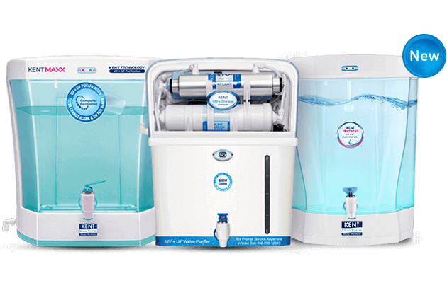

At timidlly , we provide water solutions for industries & home. Timidlly is innovating and providing solutions to protect people from harmful diseases.
Driven by the purpose to offer good health to one and all, Timidlly is, without a doubt, the best guardian of your family’s health and lets you drink pure,
breathe pure, eat pure & live pure.
Technological advancements from the house of Timidlly have been recognised globally
Trusted by Millions, India’s highest selling and most awarded KENT RO Water Purifiers make your water 100% pure. With its revolutionary Mineral ROTM technology and multiple purification process of RO+UV+UF, KENT ensures 100% pure & healthier drinking water.

KENT offers innovative UV Water Purifiers that are easy to use and disinfect water without altering its taste and odour. These purifiers are equipped with UV followed by UF membrane to disinfect water, making it free from deadly bacteria, viruses and cysts.
Convert your drinking water into alkaline water - KENT’s Water Filter Pitchers provide you and your family with healthy drinking water. Alkaline Water Filter Pitcher converts your drinking water into alkaline water. It increases the pH level of water up to 9.5 that reduces acidity, fortifies your health, and boosts your immunity. Gravity Water Filter Pitcher removes any physical impurities from water and enhances the taste of tap water, making it safe and healthy for drinking.

Make your Wash Basin Water Bacteria & Virus Free - The water you use for brushing teeth and washing your eyes & hands comes from overhead tank which could be contaminated with bacteria and other impurities. KENT’s next gen Health Plus, with its superior Ultra Filtration Technology, protects your family with bacteria & virus free water on your wash basins.
KENT has brought up its high end non electric Gravity Water Purifiers that use natural force of gravity to eliminate suspended impurities, bacteria and cyst to make your drinking water pure. This eradicates the rising problem of contaminated water in rural areas.